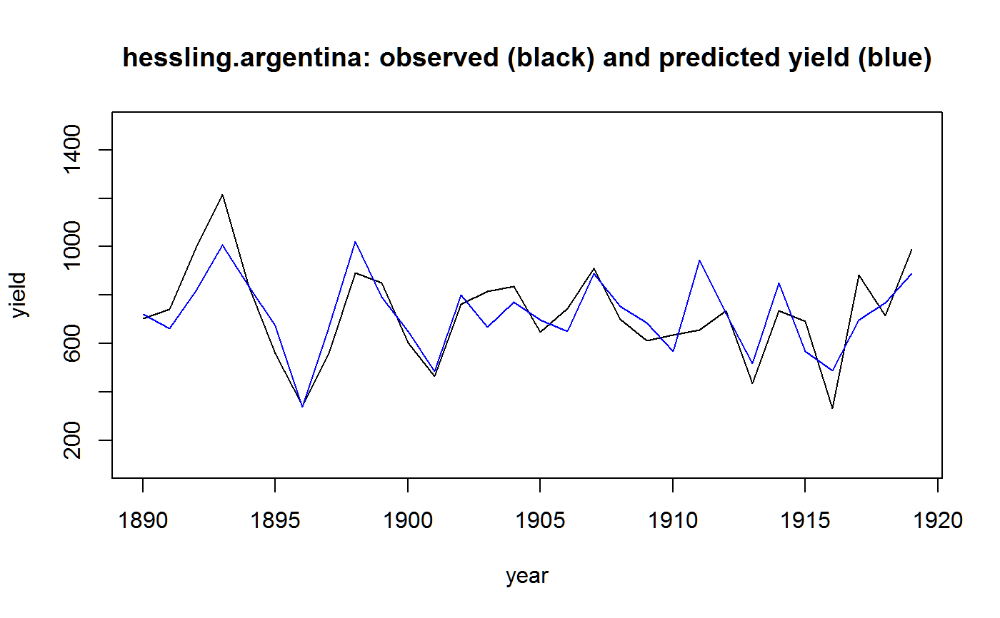
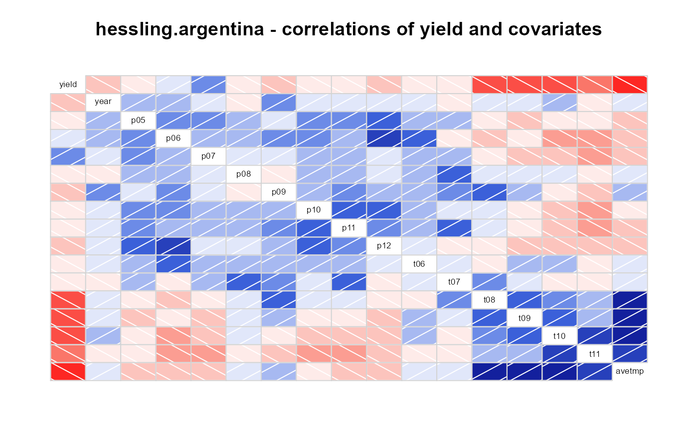

hessling.argentina.RdRelation between wheat yield and weather in Argentina
A data frame with 30 observations on the following 15 variables.
yieldaverage yield, kg/ha
yearyear
p05precipitation (mm) in May
p06precip in June
p07precip in July
p08precip in August
p09precip in Septempber
p10precip in October
p11precip in November
p12precip in December
t06june temperature deviation from normal, deg Celsius
t07july temp deviation
t08august temp deviation
t09september temp deviation
t10october temp deviation
t11november temp deviation
In Argentina wheat is typically sown May to August. Harvest begins in November or December.
N. A. Hessling, 1922. Relations between the weather and the yield of wheat in the Argentine republic, Monthly Weather Review, 50, 302-308. https://doi.org/10.1175/1520-0493(1922)50<302:RBTWAT>2.0.CO;2
# \dontrun{ library(agridat) data(hessling.argentina) dat <- hessling.argentina # Fig 1 of Hessling. Use avg Aug-Nov temp to predict yield dat <- transform(dat, avetmp=(t08+t09+t10+t11)/4) # Avg temp m0 <- lm(yield ~ avetmp, dat) plot(yield~year, dat, ylim=c(100,1500), type='l', main="hessling.argentina: observed (black) and predicted yield (blue)")#> #>#> #> #>yld <- dat[,"yield",drop=FALSE] yld <- as.matrix(sweep(yld, 2, colMeans(yld))) cov <- dat[,c("p06","p07","p08","p09","p10","p11", "t08","t09","t10","t11")] cov <- as.matrix(scale(cov)) m2 <- plsr(yld~cov) # biplot(m2, which="x", var.axes=TRUE, main="hessling.argentina") libs(corrgram) corrgram(dat, main="hessling.argentina - correlations of yield and covariates")# }